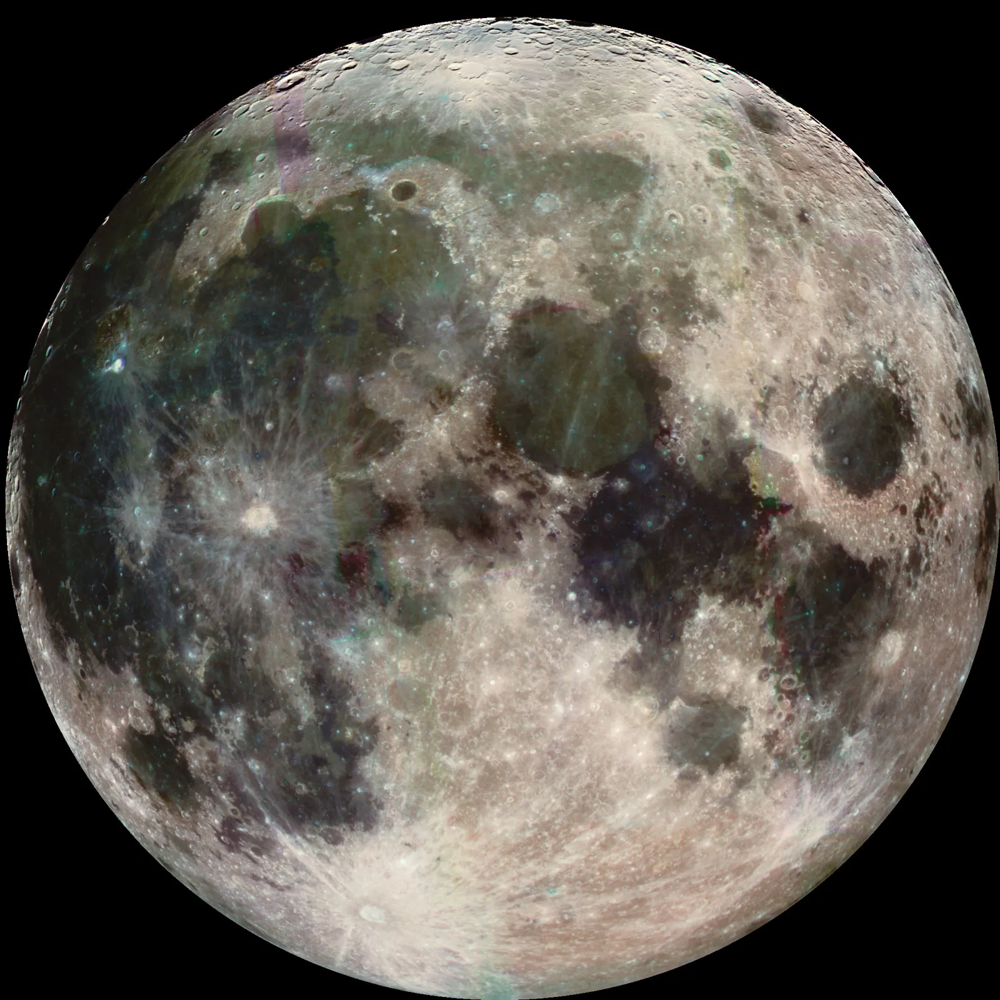

The Moon

What is the Moon? (චන්ද්රයා යනු කුමක්ද?)
චන්ද්රයා යනු පෘථිවියේ ඇති එකම ස්වභාවික චන්ද්රිකාවයි. එය සෞරග්රහ මණ්ඩලයේ පස්වන විශාලතම ස්වභාවික චන්ද්රිකාව වන අතර පෘථිවියේ සිට කිලෝමීටර් 384,400 ක් පමණ ඈතින් පිහිටා ඇත.
Physical Characteristics
- Atmosphere: චන්ද්රයාට සැලකිය යුතු වායුගෝලයක් නොමැත. මේ හේතුවෙන් ශබ්දය ගමන් කිරීමට මාධ්යයක් නොමැති බැවින් සඳ මතදී ශබ්දය ඇසෙන්නේ නැත.
- Temperature: දිවා කාලයේදී උෂ්ණත්වය 127°C දක්වා ඉහළ යන අතර, රාත්රියේදී -173°C දක්වා අතිශයින් ශීතල වේ.
- Gravity: මෙහි ගුරුත්වාකර්ෂණය පෘථිවිය මෙන් 1/6 කි. (උදා: පෘථිවියේ බර 60kg නම්, සඳ මතදී එය 10kg ලෙස දැනේ).
Motion and Appearance
- Synchronous Rotation: සඳ තමා වටා කැරකීමට සහ පෘථිවිය වටා යාමට එකම කාලයක් (දින 27.3) ගනී. මේ නිසා අපට සැමවිටම පෙනෙන්නේ සඳෙහි එකම පැත්තකි.

- Lunar Phases: සූර්යාලෝකය සඳ මත පතිත වන ආකාරය අනුව අමාවක සිට පසළොස්වක දක්වා චන්ද්ර කලාවන් වෙනස් වේ.

Surface Features
- Lunar Highlands: ආවාට වලින් පිරි, ලා පැහැති කඳුකර ප්රදේශ.
- Maria: පැරණි ගිනිකඳු පිපිරීම් වලින් සෑදුණු අඳුරු, තැන්න සහිත ප්රදේශ.


Importance of the Moon
- Tides: චන්ද්රයාගේ ගුරුත්වාකර්ෂණ බලය නිසා සාගරයේ වාරම් (මුහුදු රළ මට්ටම ඉහළ යාම සහ පහළ බැසීම) ඇති වේ.
- Earth's Tilt: පෘථිවියේ අංශක 23.5 ක ඇලවීම ස්ථාවරව තබා ගැනීමට සඳ උදව් වේ. අපට කාලගුණික සෘතු ලැබෙන්නේ මේ නිසාය.
Lunar Exploration
- Apollo 11 (1969): නීල් ආම්ස්ට්රෝං සහ බස් ඕල්ඩ්රින් සඳ මත පා තැබූ පළමු මිනිසුන් බවට පත් විය.
- Modern Day: වර්තමානයේ ඇමරිකාව (Artemis), ඉන්දියාව (Chandrayaan) සහ චීනය වැනි රටවල් සඳෙහි දක්ෂිණ ධ්රැවයේ ජලය සෙවීම සඳහා මෙහෙයුම් දියත් කරයි.